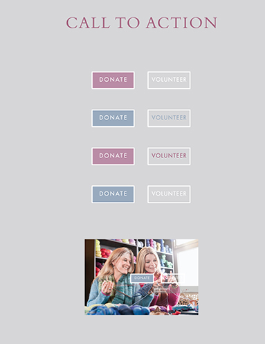
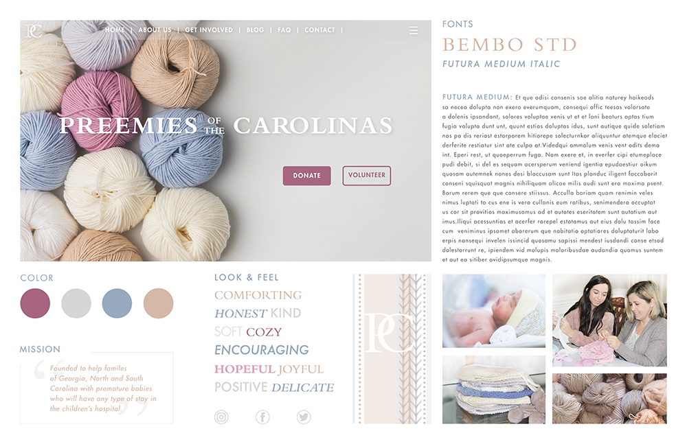

Solution
After the research I formed a Call to Action to accomplish the goal of the website as well as a style tile to help convey the general feel.
Call To Action
 The primary goal of my client is to attract an audience of people who will be willing to donate. Not everyone can knit/crochet, making it challenging to find people who can handmake these products, but anyone can definitely send a dollar their way. If their main goal was to attract handcrafters who have skills to make the product, then the range of audience would be very narrow and specific. It would not be able to reach a very wide audience. They do call for people to volunteer to help distribute or package their goods, but the best way to help them is still financially, or by donating supplies. I want to make two different buttons for my call to action. One being highlighted as most important, and the other as a second option on the site. The highlighted button would be “donate”, and the second button would be “volunteer”. Under the volunteer button they would be directed to information on dates, times, places, and ways the viewer could get involved with the organization. Under the donate button, there will be two options to donate. the prefered method is monetary, and the second method would be to ship or drop off a package of goods that you have hand crafted.Style Tile
I created a style tile to help convey the general feel of the website I will design.
The adjectives I aimed at visually describing were warm, comforting, honest, soft, friendly, positive, and delicate. These adjectives would help a user feel welcome and would encourage them to trust Preemies of the Carolinas and volunteer or donate.
To support the adjectives, I chose the serif display type Bembo Std. This type appears classy and sophisticated and would be present on other brnading elements such as the logo. For the body copy and some second headlines, I chose the sans serif Futura Medium because it is easy to read in large amounts and is clean feeling. The letterforms appear spacious and friendly.
I want to use imagery with similar textures that has high contrast and shows people working together as well as pictures of babies and the goods that were handmade by the organization members.
The color scheme is also aimed at feeling welcoming and warm: mainly neutrals with small touches of color in small elements to emphasize the headlines, mission statement, and unite the page.
The style tile also showcases the new logo I designed for ACW to match their new, modern branding. I wanted the logo to be a timeless lockup that felt authentic and friendly as well as scalable to various sizes.